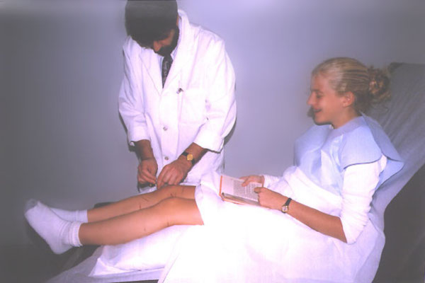

The best word to describe an acupuncture session is "UNEVENTFUL".
Some people feel nothing at all; others feel a slight pinch that can be followed by a mild sensation of tingling, numbness, traveling warmth, or heaviness. The needles are left in place for 20 - 40 minutes.
Most people find the experience extremely relaxing and uplifting.

We always tell patients to let us know immediately if they feel any sort of discomfort. If there are any sensations that can be interpreted as pain - please do not exercise your patience and courage, tell us right away: we can use different points, different needles, different techniques, different positions to make it comfortable.
Acupuncture needles are 25-50 times thinner than a hypodermic needle. Insertions of these hair-thin needles are not painful at all! We use new needles with each treatment.
All needles are single-use, sterile, pre-packaged, and disposable.
During the first session a complete acupuncture examination takes place. This includes the history of your condition and general medical history. You may be asked many different questions about all kind of bodily functions and all aspects of your health.
Several points on the body will furthermore be palpated and your tongue will be examined. In addition, the acupuncturist will closely monitor your pulse. Then the acupuncturist will make a diagnosis and will start the treatment.
All acupunctural treatments are individually tailored!
In addition to needling, it may be also beneficial to use warmth, massage, herbs, nutrition scheme, manipulations etc.
Nowadays also, specific currents or lasers can be used for acupuncture treatment. Advantage of laser acupuncture is that this method is non-invasive, quick, absolutely painless, very safe, and provides fast clinical results.
Every next treatment session starts with a short questioning so the acupuncturist can interact with the state of the complaints at the very moment of the treatment.
Copyright Policy
Please, feel free to copy and use this material with the proper reference. This courtesy is expected. Thank you.
This page last updated: 22-July-2024
Tel: (401)-738-9355 | getwell@doctor.comㅤㅤ141 Airport Road, Warwick, RI 02889